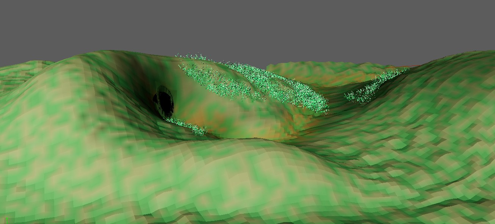
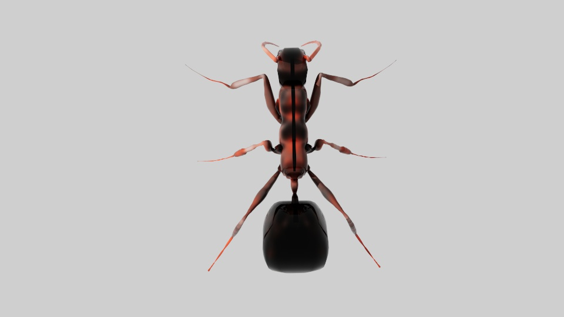
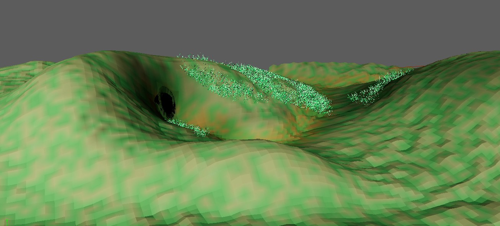
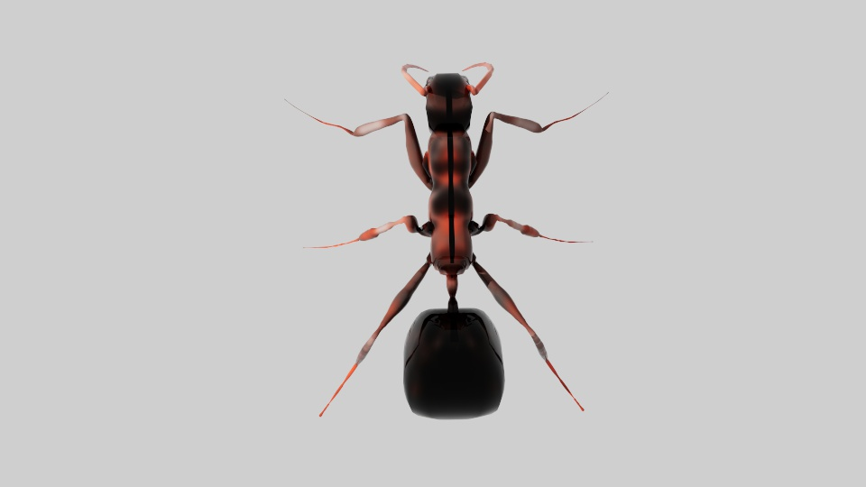

Description
Passionate about storytelling through animation, I specialize in creating engaging narratives that blend science and art. With a focus on nature-themed projects, I bring unique concepts to life, like my current documentary exploring ants and their fascinating behaviors. My experience spans [mention specific skills, roles, or achievements], and I thrive on projects that inspire curiosity and connect audiences with the natural world.

 


